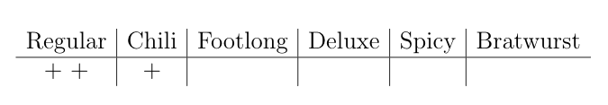
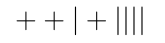

Type 4 - Selection With Repetition¶
In this section, we present some tasks involving selection with repetition problems. In our 2x2 grid, this is the cell in which repetition is allowed, and we are counting unordered outcomes. Essentially, we are counting multi-sets, or sets in which multiple elements are allowed. In problems like these, we can again employ multi-stage processes, where elements can be repeated. For instance, we can count something like 111, 112, 233, etc. However, in addition, we must consider duplicate outcomes, as we do not want to count ordered outcomes, but rather unordered outcomes. For instance, in counting ordered outcomes, we might count 112, 121, and 211 as distinct outcomes. In counting unordered outcomes, we do not consider those as distinct; they are all the same multi-set {1, 1, 2}. Like we did with type 3 problems (selection without repetition), we can reframe unordered as uniquely ordered.
A typical problem of this type involves selecting some set of objects from different types of objects, as that suggests that objects can be repeated. For example, consider the following problem:
There are six different types of hotdogs (regular (R), chili (C), footlong
(F), deluxe (D), spicy (S), and bratwurst(B)), and you are buying three
hotdogs to share with your two friends. How many possibilities are there for
which kinds of hotdogs you select, if it is undecided who will get which dog?
Because it is undecided who will get each dog, the order that you pick the hot dogs doesn’t matter. Let us think of what kinds of outcomes we could have. You could buy three regular, which would suggest an outcome like RRR, or chili (CCC), or you could buy two footlongs and one deluxe (FFD). Notably, you are only counting how many possible outcomes there are - you don’t care who gets which hot dog, so there is no distinction between two footlong hot dogs, say (so, FFD and FDF are the same outcome). In this way, we can see that the outcomes are multisets - sets of hot dogs where repetition is allowed. The outcomes can be encoded as three-letter sequences from the letters R, C, F, D, S, B, where repetition is allowed. The question now is, how many such outcomes are there? We will answer this in this section.
We can be clever in how we represent our hot dogs. If we consider the six different kinds of hot dogs as being represented by the numbers 1, 2, 3, 4, 5, and 6, then let us consider what different outcomes might be. Now the outcomes can be thought of as non-decreasing sequences of length 3. A non-decreasing differs from an increasing sequence because a non-decreasing sequence can repeat numbers; for example, 1 1 2 is non-decreasing because it does not decrease, but it is not strictly increasing because a number is repeated. Indeed, an equivalent way to frame this question is to ask the following:
How many non-decreasing sequences of length three are there from the
numbers 1 through 6?”
Here are the outcomes. We’ve listed them so that each row corresponds to all outcomes starting with a particular number.
111, 222, 333, 444, 555, 666,
112, 223, 334, 445, 556,
113, 224, 335, 446, 566,
114, 225, 336, 455,
115, 226, 344, 456,
116, 233, 345, 466,
122, 234, 346,
123, 235, 355,
124, 236, 356,
125, 244, 366,
126, 245,
133, 246,
134, 255,
135, 256,
136, 266,
144,
145,
146,
155,
156,
166
To be explicit about representing hot dogs in this way, note that for any choice of three hot dogs, it can correspond to a three-digit nondecreasing sequence. We could make the correspondence of R - 1, C - 2, F - 3, D - 4, S - 5, and B - 6. So an outcome like 255 would mean you bought a chili dog and two spicy dogs. We make this connection because we will write a program that counts non-decreasing sequences, and any such selection with repetition problem can be similarly encoded as non-decreasing sequences.
In particular, the following code is written to list out all possible nondecreasing sequences of the numbers 1 through 6. Run this code. Do you get what you expect?
Please answer the following questions about this code.
Quick Check 1¶
- DDB
- Incorrect. The code produces sequences of numbers, not letters.
- 464
- Incorrect. We are counting nondecreasing sequences.
- 446
- Correct. This is a nondecreasing sequence corresponding to two deluxe dogs and a bratwurst.
- 644
- Incorrect. We are counting nondecreasing sequences.
Q-1: Given the correspondence of R - 1, C - 2, F - 3, D - 4, S - 5, and B - 6, suppose you bought two deluxe dogs and a bratwurst. How would you expect this outcome to show up in your list of outcomes?
Quick Check 2¶
Which part of the code helps us ensure that the sequences we are counting are nondecreasing?
Finding a General Solution¶
It is difficult to find a general solution for these types of problems if we only encode our outcomes as multisets (e.g. {R, R, C}) or as non-decreasing sequences (e.g. 1 1 2). Let’s introduce our final way to encode these outcomes, which is commonly referred to as stars and bars. Suppose we were ordering hotdogs, and we were given a piece of paper with each of the types of hotdogs on it. If we put tally marks under each type of dog to indicate the number of that type we wanted, we could represent our order something like this:
{kind=link}
This order would indicate that we want two regular and one chili dog. When written exactly like this, there is quite a bit of information that is not relevant to counting. For example, the names of the types of hot dogs does not matter. If we know the order of the types of hot dogs in the top row, we really only need the bottom row, like so.
So, we have stripped a lot of the unnecessary information away by representing our selection of hot dogs as an arrangement of three + signs and five bars. For the sake of writing on a keyboard, let’s change symbols. We will replace the \(|\) with a B, for bar, and we will replace the \(+\) with an s, for star. So, the way to write \(++|+||||\) will be ssBsBBBB.
Q-2: The way to represent two footlongs and a Bratwurst using the symbols s and B is .
Let’s focus on determining the number of bars. There are six types of hot dogs, and by using five Bs we can create the six columns needed for the hot dogs. In general, you will need one fewer B than columns (or category). Since we are choosing three hotdogs, we are placing three s’s among those five Bs. In general, you will need the same number of s’s as the number of items being selected.
So, our outcomes now look like arrangements of five Bs and three s’s. Further, any such arrangement will produce a unique outcome, and we can represent every outcome like this. This tells us that the number of ways to choose three hot dogs from six types of hot dogs is the same number of ways to arrange three s’s and five Bs. This gives us eight objects total. Whenever we arrange three s’s and five Bs, we can think about putting these objects into eight positions, and wherever we place the three s’s we know the five Bs must fill in the remaining positions. Thus, there are \({8\choose 3}\) ways to arrange the s’s and Bs. This tells us that there are \({8\choose 3}=56\) ways to pick three hot dogs from six types of hot dogs.
- 11 - 3
- Incorrect.
- 4 + 4
- Incorrect.
- 5 + 3
- Close, but d better represents the 8.
- (6 - 1) + 3
- Correct
Q-3: The 8 in \({8\choose 3}\) is best described by which expression?
This method of representing outcomes as arrangements of s’s and Bs works best to create a general formula because we already know how to count them. Consider the general problem:
Suppose there are \(n\) distinct types of objects, and you are selecting \(k\) objects (where you can select any number from each type). If the order of the objects being selected does not matter, how many ways are there to do this?
We can think about how to represent our objects as s’s and Bs. To do so, we must figure out how many s’s and how many Bs we are arranging. The Bs are used to create columns, where you need one fewer B than you need columns. If we have \(n\) types of objects, we can represent a column for each type using \(n-1\) Bs. The s’s are used to represent how many of each type we are selecting. We need the same number of s’s as the number of objects we are selecting. So, if we are selecting \(k\) objects, then we need \(k\) s’s. Our final outcomes will be arrangements of \(n-1\) Bs and \(k\) s’s. So, there are \(n+k-1\) total objects which means we are placing \(n-1\) Bs and \(k\) s’s into \(n+k-1\) positions. There are \({n+k-1\choose k}\) ways to choose the positions of the s’s, and the rest of the positions will be filled in by the Bs. This gives us our general solution:
Suppose there are \(n\) distinct types of objects, and you are selecting \(k\) objects (where you can select any number from each type). There are \({n+k-1\choose k}\) ways to do this.
Practice Problems¶
1.) Suppose there are 9 types of doughnuts at the bakery, and you are picking up 4 for a meeting. Write code that will find the number of ways to do this.
Q-4: The total number of ways to select nine doughnuts from four types is .